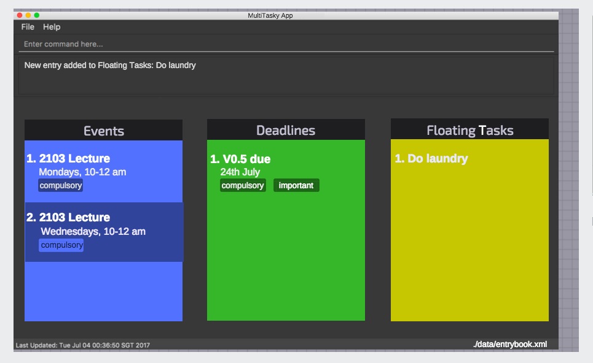

By: Team 2 Since: Jun 2017 Licence: MIT
- 1. Welcome
- 2. Getting Started
- 3. Features
- 3.1. Viewing help :
help - 3.2. Adding an entry:
add - 3.3. Completing a task :
complete - 3.4. Listing all entries :
list - 3.5. Editing an entry :
edit - 3.6. Finding an entry :
find - 3.7. Deleting an entry :
delete - 3.8. Restoring an entry :
restore - 3.9. Listing entered commands :
history - 3.10. Undo changes :
undo - 3.11. Redo changes :
redo - 3.12. Clearing entries :
clear - 3.13. Exiting the program :
exit - 3.14. Saving the data
- 3.1. Viewing help :
- 4. FAQ
- 5. Glossary
- 6. Command Summary
1. Welcome
We often find ourselves overwhelmed by different sets of tasks every single day, and frequently have to spend huge amounts of time organizing and remembering what to do. However, with MultiTasky and our smart key commands, effortlessly organizing such tasks become a cinch, allowing you to deal with your daily tasks with maximum efficiency!
2. Getting Started
Setting up MultiTasky is simple. Just follow these simple steps:
-
Ensure you have Java version
1.8.0_60or later installed in your Computer. You may find the latest version of JRE8 from here.NoteHaving any Java 8 version is not enough.
This app will not work with earlier versions of Java 8. -
Download the latest
MultiTasky.jarfrom the releases tab. -
Copy the file to the folder you want to use as the home folder for your Task Manager.
-
Double-click the file to start the app. The GUI should appear in a few seconds.
 -
Type the command in the command box and press Enter to execute it.
e.g. typinghelpand pressing Enter will open the help window. -
Some example commands you can try:
-
list: lists all active tasks -
addsales proposal /by 050717 1400: adds an entry namedsales proposalwith deadline5th July, 2pmto the Task Manager -
delete/deadline 3: deletes the 3rd deadline entry shown in the current list -
exit: exits the app
-
-
Refer to the Features section below for details of each command.
-
The Glossary may be useful if you come across unfamiliar terms used.
3. Features
Command Format
-
Words in
UPPER_CASEare the parameters. -
Items in
[ ]are optional. -
Items separated by
|indicate that either should be used, but not both. -
Items with
…after them can have multiple instances. -
DATE_TIMEformat isddmmyy hhmm.NoteYou can replace date by smart keywords like tomorroworfriday!
2pmor830amcan be also be used alternatively to indicate time
Defaults
-
Default values used by commands can be found in the file
config.json.
3.1. Viewing help : help
Shows help for all the commands
Format: help
3.2. Adding an entry: add
Adds an entry to the active tasks
Format: add ENTRY_NAME [/on | /at | /from | /by DATE_TIME_A] [/to DATE_TIME_B] [/every day | week | month | year [NUM_TIMES | /until END_DATE_TIME]] [/tag TAG_1 TAG_2…]
Defaults from config.json:
-
The default value for events can be found as
addDurationHours. -
If neither
NUM_TIMESnorEND_DATE_TIMEfor a recurring entry is specified,recurringNumTimesis used for the number of recurring events to add to the Task Manager.
Examples:
-
add dinner with parents /from friday 6pm /to friday 9pm /tag family -
add go to the gym /on monday 10am /every week /tag exercise, activities -
add project submission /by 050717 1000 /tag school -
add write novel /tag bucketlist -
add clean up room
3.3. Completing a task : complete
Finds and checkmarks a task as completed and moves it to archive.
Format: complete [KEYWORD_1 KEYWORD_2…] | [/event | /deadline | /float INDEX]
-
There are two ways to select an entry to complete: searching by
KEYWORD, or specifying theINDEX.-
The keyword searches both the entry name and tags, and a found entry must match all keywords.
-
The search must only produce one entry to complete. If multiple entries are found to match the keyword no entries will be marked completed.
-
The search will be done on
active. -
The index refers to the index number shown in the last active entry listing. The index must be a positive integer 1, 2, 3, …
-
Examples:
-
complete clean up room -
complete /deadline 3
3.4. Listing all entries : list
Displays a list of entries sorted by datetime.
Format: list [/from START_DATE_TIME][/to END_DATE_TIME][/archive | /bin]
Defaults from config.json
-
The default number of entries to list can be configured using
listNumResults
Examples: * list * list /to 050717 1400 /archive
3.5. Editing an entry : edit
Edits an existing entry in the active list.
Format: edit [KEYWORD_1 KEYWORD_2…] | [/event | /deadline | /float INDEX] [/name NEW_ENTRY_NAME] [/on | /at | /from | /by DATE_TIME_A] [/to DATE_TIME_B] [/every day | week | month | year [NUM_TIMES | /until STOP_DATE] [/tag TAG_1 TAG_2…]
Defaults from config.json:
-
If neither
NUM_TIMESnorSTOP_DATEfor a recurring entry is specified,recurringNumTimesis used for the number of recurring events to add to the Task Manager.
Examples:
-
edit /event 1 /on saturday 6pm
Edits the 1st entry of event list to take place on the coming Saturday at 6pm, for a duration set byaddDurationHours. -
edit /deadline 2 /every week 3 /tag
Edits the 2nd entry in deadline list to take place every week for 3 weeks including its current occurence, and clears all its existing tags. -
edit zoo outing /on 200917 1200
Edits the entry matching "zoo" and "outing" to take place on 20 September, 12pm. If there are multiple entries that match the keywords, no entries are modifies.
3.6. Finding an entry : find
Finds entries which names or tags contain all of the given keywords.
Format: find KEYWORD_1 [KEYWORD_2 …] [/archive|/bin]
Defaults from config.json:
-
The maximum number of
findresults shown to the user isfindNumResults
3.7. Deleting an entry : delete
Deletes the specified entry from the active entries list.
Format:
delete [KEYWORD_1 KEYWORD_2…] | [/event | /deadline | /float INDEX] [/force]
Examples:
-
list
delete 2
Deletes the 2nd entry in the active list. -
delete pasta dinner
yes
Deletes all entries in the active list that matches "pasta" and "dinner" in the name or tag, after prompting the user to confirm if multiple entries are found. -
delete pasta dinner /force
Deletes all entries in active entries.
3.8. Restoring an entry : restore
Finds and restores an archived or deleted entry back to active tasks
Format: restore [KEYWORD_1 KEYWORD_2…] | [/event | /deadline | /float INDEX]
-
There are two ways to select an entry to restore: searching by
KEYWORD, or specifying theINDEX.-
The keyword searches both the entry name and tags, and a found entry must match all keywords.
-
The search must only produce one entry to modify. If multiple entries are found to match the keyword no entries will be modified.
-
The search will be done on
archiveandbin -
The index refers to the index number shown in the last active entry listing. The index must be a positive integer 1, 2, 3, …
-
3.9. Listing entered commands : history
Lists all the commands that you have entered in chronological order.
Format: history
3.10. Undo changes : undo
Undo the changes made by the last command.
Format: undo
-
Allows multiple undo’s.
3.11. Redo changes : redo
Reapply the changes removed by the undo command.
Format:
redo
-
Allows redoing up until the most recent change.
3.12. Clearing entries : clear
Clears all entries from sections of the Task Manager.
Format: clear [/archive | /bin | /all]
3.13. Exiting the program : exit
Exits the program.
Format: exit
3.14. Saving the data
Task Manager data are saved in the hard disk automatically after any
command that changes the data.
There is no need to save manually.
4. FAQ
Q: How do I transfer my data to another Computer?
A: Install the app in the other computer and overwrite
the empty data file it creates with the file that contains the data of
your previous Task Manager folder.
5. Glossary
Entry
Any item stored in the system (e.g. events, deadlines, floating tasks).
An entry must have:
A name
An entry can have:
No specific start or end date or time or
Single specified date and/or time as a deadline or
Specified start and end date and/or time and/or
Zero or more tags
Event
An entry in the Task Manager with * Specified start and end date and/or time
Deadline
An entry in the Task Manager with * Single specified date and/or time as a deadline
Floating Task An entry in the Task Manager with * No specified date or time associated
Tag
Additional single words saved within
entriesas descriptors
Active list
A list of all of the ongoing to-do entries that have not been completed/deleted yet.
Archive
A container that stores entries marked as 'done'.
Bin
A container that stores entries that are deleted.
Mainstream OS
Windows, Linux, Unix, OS-X
ddmmyy hhmm format
Refers to Date,Month,Year and Hour, Minute in 24H clock format.
6. Command Summary
-
Help
help -
Add
add ENTRY_NAME [/on | /at | /from | /by DATE_TIME_A] [/to DATE_TIME_B] [/every day | week | month | year [NUM_TIMES | /until END_DATE_TIME]] [/tag TAG_1 TAG_2…]-
e.g.
add dinner with parents /from friday 6pm /to friday 9pm /tag family
-
-
Complete
complete [KEYWORD_1 KEYWORD_2…] | [/event | /deadline | /float INDEX]-
e,g,
complete clean up roomorcomplete /event | /deadline | /float 3
-
-
List :
list [/from START_DATE_TIME][/to END_DATE_TIME][/archive | /bin]-
e.g.
list /to wednesday 2pm /archive
-
-
Edit :
edit [KEYWORD_1 KEYWORD_2…] | [/event | /deadline | /float INDEX] [/name NEW_ENTRY_NAME] [/on | /at | /from | /by DATE_TIME_A] [/to DATE_TIME_B] [/every day | week | month | year [NUM_TIMES | /until STOP_DATE] [/tag TAG_1 TAG_2…]-
e.g.
edit zoo outing /on 200917 1200
-
-
Find :
find KEYWORD_1 [KEYWORD_2 …] [/archive|/bin]-
e.g.
find lecture
-
-
Delete :
delete [KEYWORD_1 KEYWORD_2…] | [/event | /deadline | /float INDEX] [/force]-
e.g.
delete pasta dinner
-
-
History :
history -
Clear :
clear [/archive | /bin | /all] -
Undo :
undo -
Redo :
redo -
Exit :
exit